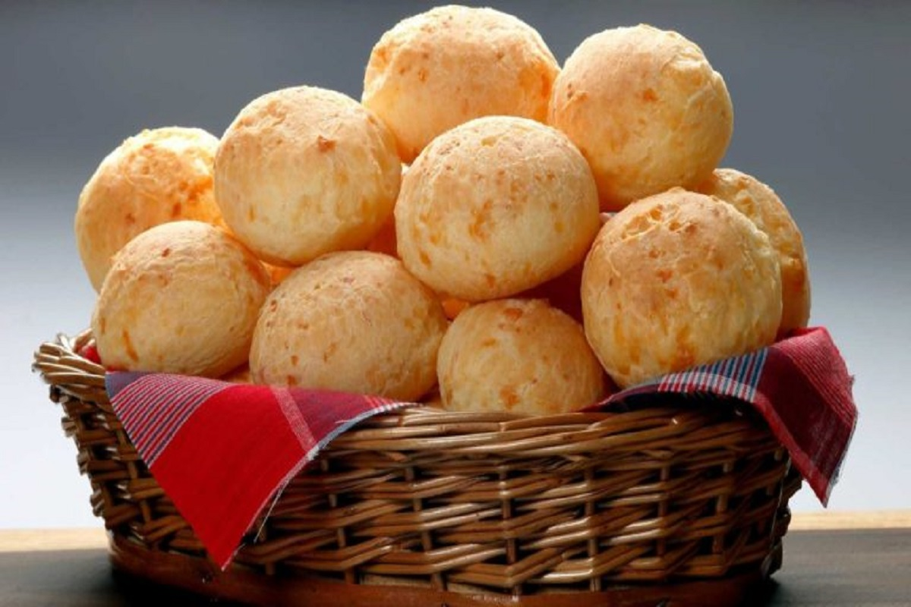

Sobre o site Receitas da vovó
Sempre amei a culinária; desde pequena, estive na cozinha com minha avó. Quando viajava para o interior de Minas Gerais, ajudava a criar inúmeras receitas caseiras que me enchiam de alegria. Com isso, após herdar o caderninho de receitas da minha avó, decidi criar o site "Receitas da Vovó" para incentivar outras famílias a criarem momentos tão felizes quanto os que eu vivi ao lado dela no interior.
Espero que aproveitem a experiência de recriar receitas que foram feitas com muito amor e carinho por uma avó e sua neta no interior de Minas Gerais.
Receitas

 30 minutos
30 minutos